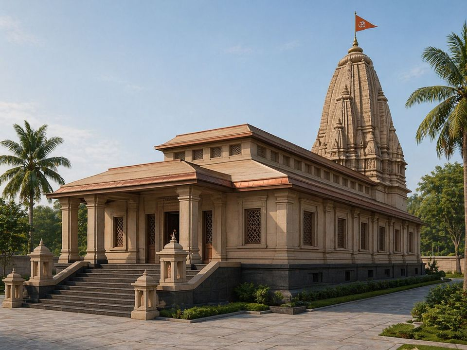

ऋतम्भरेश्वर मंदिर
A MANDIR TO THE LORD WHO BEARS THE COSMIC ORDER
Rising in Jabalpur, Madhya Pradesh — a temple whose every measure keeps the order it is named for. This is the land it rises from: the field, the festivals, the sevā, and the way in.

निर्माणाधीन
UNDER CONSTRUCTION — NOT YET OPEN [expected opening —]
ṚTAM FOUNDATION is the organization raising the mandir. [The land page grows here — S2: this season, the three readings, sevā, reaching the kṣetra.]
मंदिर
THE WALK — THE MANDIR RISING
THE GROUND DARKENS AS YOU GO IN